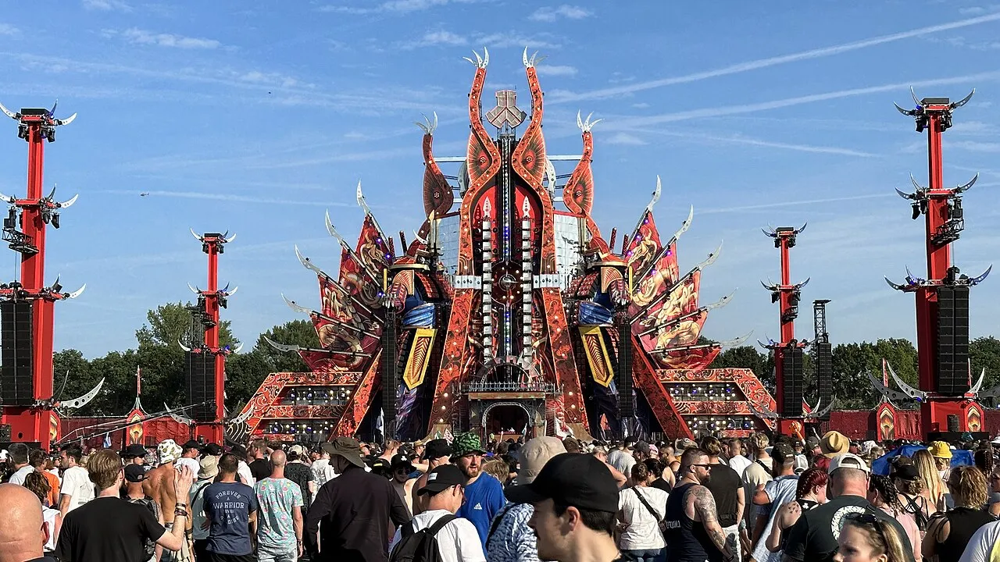
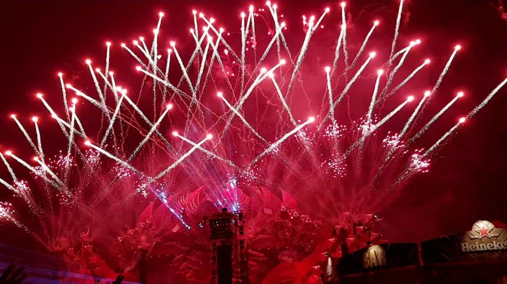
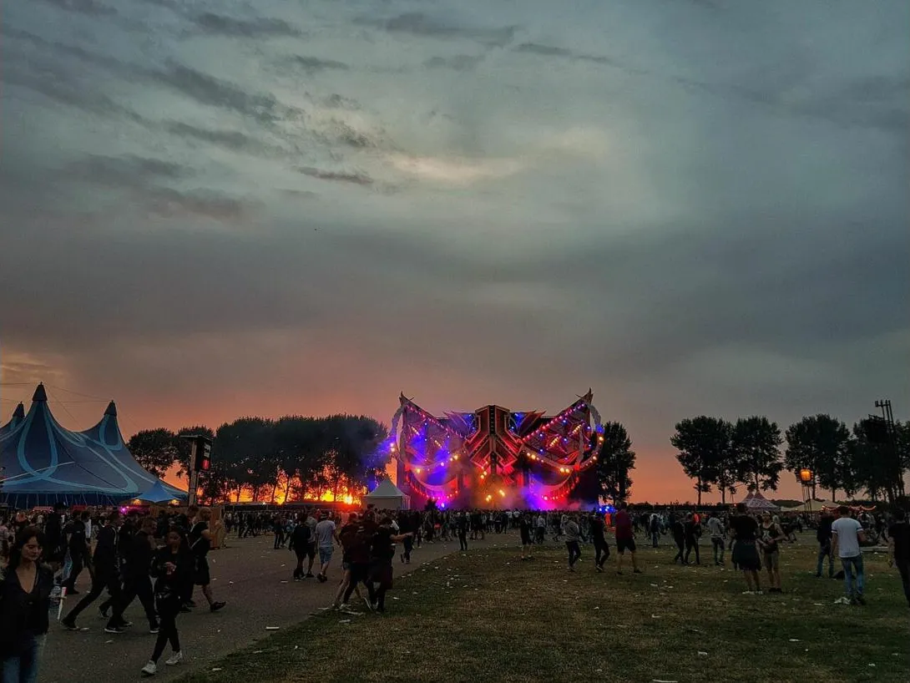

Festival guide, 2027
Defqon.1 2027: dates, tickets, sale dates and line-up
The Biddinghuizen hardstyle festival: when 2027 is, how the sales stages work, why 2026 was cancelled and how to get there.
A festival that changed its rules.
Defqon.1 is the big hardstyle weekend, and in October 2026 it sits in an odd place: the last edition ended early, the next one is nine months away, and the ticket rules changed because of it. Searches for Defqon.1 2026 and for Defqon.1 2027 are both high, which fits a festival whose buyers are working out what happened and what to do next.
This page covers what the festival is, when and where the 2027 edition is held, how the sales stages work, why 2026 was cancelled and where to hear the music. For the music itself, see the hardstyle guide. Searchers also type the name as Defqon 1, because the dot is part of the brand.
What is Defqon.1 festival?
Defqon.1 is a hardstyle festival run by Q-dance. It is held in June at Biddinghuizen in the Netherlands. According to Hardstyle Mag, it began in 2003 at Almeerderstrand and has been in Biddinghuizen since 2011. The 2022 edition was the first to run from Thursday to Monday, and Q-dance and the Walibi Holland theme park extended their agreement on the site for ten more years.

Visitor numbers are quoted differently by different outlets, so this page does not give one. What is documented is the 2026 size: IQ Magazine reported that Q-dance had cut capacity to 55,000 on site by cancelling the Friday and Saturday day tickets, and that more than 350 artists were due to play.
The name has no official explanation on the pages read. The Defqon.1 meaning is open to a reading, since it resembles the US military alert level DEFCON 1, but that is an observation and not something Q-dance states.
Defqon.1 2027 dates
The Defqon.1 2027 dates are Thursday 24 June to Sunday 27 June 2027. The Q-dance event page, read on 5 October 2026, lists the festival from 24 June 2027 at 19:00 to 28 June 2027 at 00:00 at the Evenemententerrein in Biddinghuizen. The weekend ticket page describes the structure: Thursday is The Gathering, followed by Friday, Saturday and Sunday, with check-out on Monday.

The Defqon.1 dates for 2027 are therefore published, but the program for each day is not. The ticket page names the fixed rituals: the Opening Ceremony on Friday, Power Hour and The Endshow on Saturday, and the Closing Ceremony and Closing Ritual on Sunday, all at the Red stage.
| Item for 2027 | Status on 5 October 2026 |
|---|---|
| Dates | 24 to 27 June 2027, Q-dance |
| Location | Holy Grounds, Biddinghuizen |
| Tickets | Wishlist open, sales from 27 October |
| Prices | Not stated on the pages read |
| Lineup | Not stated on the pages read |
Defqon.1 tickets
Defqon.1 tickets are sold in stages, because the 2026 holders had first call on the 2027 places. Q-dance says only the tickets left after those holders decided are offered to everyone else, so availability is limited. The 2026 edition was 100 percent sold out.
Defqon.1 2027 tickets
The Defqon.1 2027 tickets on offer are the Weekend ticket, and Friday, Saturday and Sunday tickets, plus a Premium Weekend ticket. Premium day tickets are not available. A Weekend ticket covers all four days from Thursday, the camping grounds and The Wasted Lands, with check-out on Monday. There is no three day weekend ticket. Payment methods listed are PayPal, iDEAL and WERO, credit card, Klarna Pay Later and Bancontact. A shop queue and a countdown timer apply, and the wishlist does not reserve anything.
Defqon.1 2027 ticket sale
The Defqon.1 2027 ticket sale follows the schedule in the official FAQ, read on 5 October 2026:
| Date | Stage |
|---|---|
| 1 October 2026 | Wishlist opens |
| 8 October 2026 | Priority Travel and Stay booking for 2026 Travel and Stay holders who kept their admission ticket |
| 27 October 2026 | Dediqated sale |
| 29 October 2026 | Travel and Stay sale |
| 31 October 2026 | General sale |
The Dediqated sale is the members' sale. Dediqated membership costs €34.99 per year on the Q-dance page read. An order in the Dediqated sale is limited to 2 tickets, and an order in the general sale to 9.
Defqon.1 ticket prices
No Defqon.1 ticket prices for 2027 appear on the Q-dance pages read on 5 October 2026. The only price statement is for people who kept a 2026 ticket: they keep the 2026 price and pay nothing extra if prices rise. Anything quoted elsewhere as a 2027 price is not from the pages read here.
Defqon.1 2026 cancelled
Defqon.1 cancelled its 2026 edition on the opening night. IQ Magazine reported on 26 June 2026 that Q-dance announced the cancellation the previous night, 25 June, after the Netherlands' weather service issued its first code red for heat, with about 40 degrees Celsius expected. NL Times placed the announcement at about 00:24 on Friday 26 June. Q-dance said it and the authorities cancelled the remaining days because of extreme weather. Q-dance had already cancelled the Friday and Saturday day tickets to cut the crowd by 15,000 and added misting and showers. The camping grounds stayed open after the cancellation, according to IQ Magazine.
The reason given in the official update is the weather.
Defqon.1 2026 refund
For the Defqon.1 2026 refund, Q-dance said, in an FAQ updated on 30 June 2026, that the main buyer chose for each ticket between keeping it for 2027 or a refund, with a deadline of 31 July. An order with no choice was refunded automatically. Refunds ran from mid August to mid September 2026. Travel and Stay, parking and locker purchases were refunded and did not carry over. Anyone who bought through a reseller was refunded through that reseller. The Defqon.1 refund window is therefore closed in October 2026, and a kept ticket is a 2027 ticket.
Defqon.1 lineup
No Defqon.1 2027 lineup is stated on the pages read on 5 October 2026. The 2026 festival listed more than 350 artists before it was cancelled, but a list for a cancelled edition does not predict the next one.
Defqon.1 sets
The pages read did not describe a Defqon.1 live broadcast for 2027, so none is promised here. For hardstyle in the meantime, three sets from the Selector catalogue are below. None of them was recorded at Defqon.1: they are hardstyle sets from Boiler Room and DJ Mag, chosen as listening, and the Selector plays another recorded DJ set at random when you want something you do not know.
Defqon.1 location
The Defqon.1 location is the Evenemententerrein in Biddinghuizen, called the Holy Grounds by the festival, at Spijkweg 30, 8256 RJ Biddinghuizen, the Netherlands. The festival is often searched as Defqon.1 Biddinghuizen or Defqon.1 Netherlands, and both mean the same site.
Defqon.1 stages
The Defqon.1 stages carry colours. The official 2027 weekend ticket page names the Red stage as the main stage. On Thursday, The Gathering uses Blue, Black, Magenta and Indigo, with The Spotlight at the Black and The Tribute at the UV. Premium decks are at the Red, Blue and Black stages. No stage by stage genre list was found on an official 2027 page, so genres per stage are not given here.

Defqon.1 colours
The Defqon.1 colours are the stage names. The official ticket page names Red, Blue, Black, Magenta, Indigo and UV. A secondary source, hardcult.com, also lists Gold, Green and Pink stages. Those are not on the official pages read, so treat them as unconfirmed.
Defqon.1 camping
Camping is part of the Weekend ticket. The pages read give camping opening on Thursday at 12:00 and closing on Monday at 12:00, and festival hours of 18:00 to 23:00 on Thursday and 11:00 to 23:00 from Friday to Sunday. Check these again when the 2027 information goes live.
Defqon.1 shuttle
No 2027 travel details were published on 5 October 2026, so here is the 2026 pattern from the official travel page, which is useful as a guide. A Defqon.1 shuttle ran from Dronten station and cost €12.50 online, for Weekend ticket holders only, with no public transport on Friday and Saturday. Park and Ride at Harderdijk 9 in Zeewolde cost €25. Weekend parking was €50 online and day parking €27.50. Transfer buses ran from Amsterdam Centraal, Utrecht Centraal, Schiphol and Eindhoven Centraal. The festival points to the NS Travel Planner and 9292 for the journey.
Defqon.1 FAQ.
What is the Defqon.1 age limit?
The Defqon.1 age limit is 18. You must show an original passport, identity card or driving licence at the entrance, and copies are not accepted. The drugs policy is zero tolerance and includes weed and hash.
What is the Defqon.1 endshow?
The Defqon.1 endshow is a set piece of the programme. The 2027 ticket page places The Endshow at the Red stage on Saturday, with the Closing Ceremony and Closing Ritual on Sunday.
Why was Defqon.1 banned in Australia?
It was not a formal ban in the source read. The Music Network reported on 30 May 2019 that Defqon.1 Australia, which had run for about ten years in Sydney, would not return in 2019 after the Sydney International Regatta Centre withdrew its support. Two people died at the 2018 edition, and the New South Wales premier, Gladys Berejiklian, said she would shut it down.
Why did they cancel Defqon.1 in 2026?
Extreme heat. The Netherlands issued its first code red for heat, about 40 degrees Celsius was expected, and Q-dance and the authorities cancelled the remaining days on 25 and 26 June 2026.
Where is Defqon.1 located in 2026?
The cancelled 2026 edition was scheduled for the Holy Grounds in Biddinghuizen, the Netherlands. Q-dance lists the 2027 edition at the same site, from 24 to 27 June.
Was Defqon.1 sold out?
Yes. Q-dance says the 2026 edition was 100 percent sold out, so the 2027 offer is limited to tickets left after holders chose to keep theirs.
When is Defqon.1 2027?
24 to 27 June 2027. See the dates section above.
How much are Defqon.1 tickets?
The pages read on 5 October 2026 state no 2027 price. Holders who kept a 2026 ticket keep the 2026 price.
Sources.
- 2027 dates, sales schedule, ticket types, payment methods, opening times, age rule and stages, read on 5 October 2026: Q-dance Defqon.1 2027 and the Q-dance event and ticket FAQ pages linked from it.
- The 2026 cancellation and refund options, FAQ updated 30 June 2026, read on 5 October 2026: the Q-dance update page for Defqon.1 2026.
- 2026 travel, parking and shuttle prices, read on 5 October 2026: Q-dance travel to Defqon.1, 2026.
- The cancellation reports: IQ Magazine, 26 June 2026 and NL Times, 1 July 2026.
- History: Hardstyle Mag and EDM Lab, 2022. Defqon.1 Australia: The Music Network, 30 May 2019.
- Secondary source for extra stage colours, not confirmed officially: hardcult.com.
Continue reading
Read next.
 Festivals~13 min read
Festivals~13 min readWhat Is Burning Man? The Event, the City and the Music
A participant-built city in the Nevada desert, with no central lineup or main stage, and the sound camps and art cars that programme their own music.
Read article → Rave spots~10 min read
Rave spots~10 min readBest Clubs in Berlin: The Legends and the Ones Still Open
The rooms that made Berlin a techno city, the famous clubs that closed, and the best clubs in Berlin that are still open.
Read article → Rave spots~10 min read
Rave spots~10 min readBerghain: Panorama Bar, Sound and Residents
Berghain explained: the former power station, Panorama Bar upstairs, Halle am Berghain, the Kantine, and the Ostgut Ton label.
Read article → Rave spots~6 min read
Rave spots~6 min readBest Clubs in Paris: From Le Palace to Rex Club
Le Palace, Les Bains Douches and Rex Club: the clubs that made Paris nightlife, how each became famous, and the best clubs in Paris open now.
Read article →